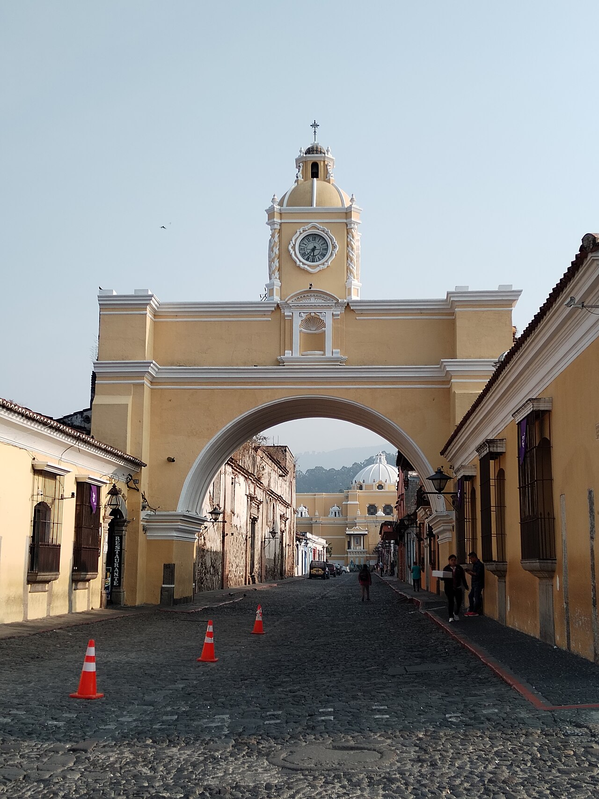

A simple guide for first-time visitors.
Welcome to Antigua Guatemala
Antigua Guatemala is a historic city with colorful streets, old churches, and views of nearby volcanoes.
This website is a simple starting point for planning a visit.

A simple guide for first-time visitors.
Antigua Guatemala is a historic city with colorful streets, old churches, and views of nearby volcanoes.
This website is a simple starting point for planning a visit.